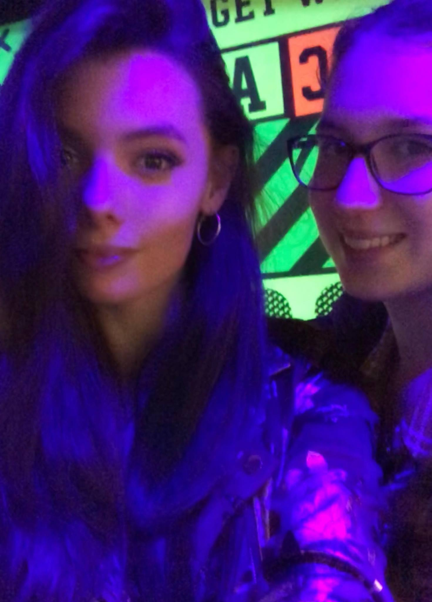
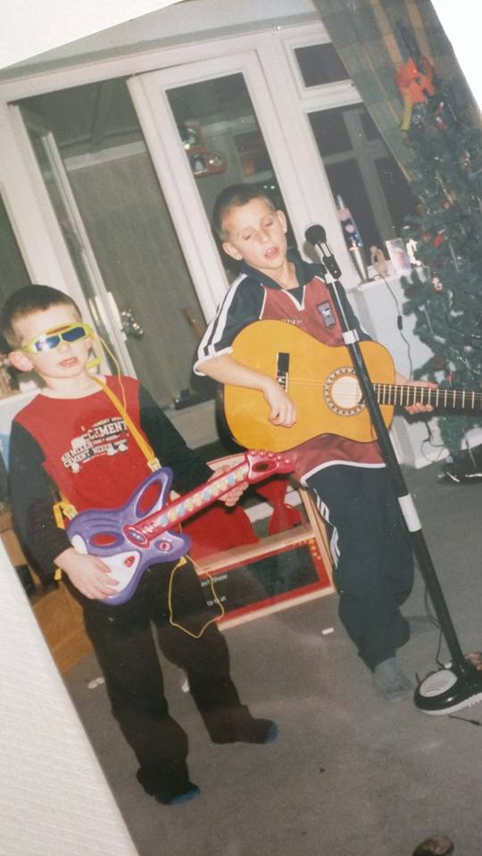
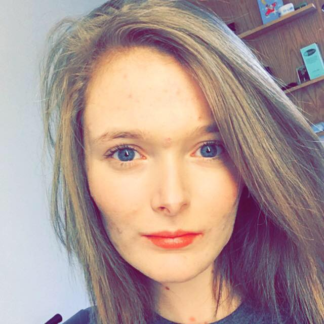
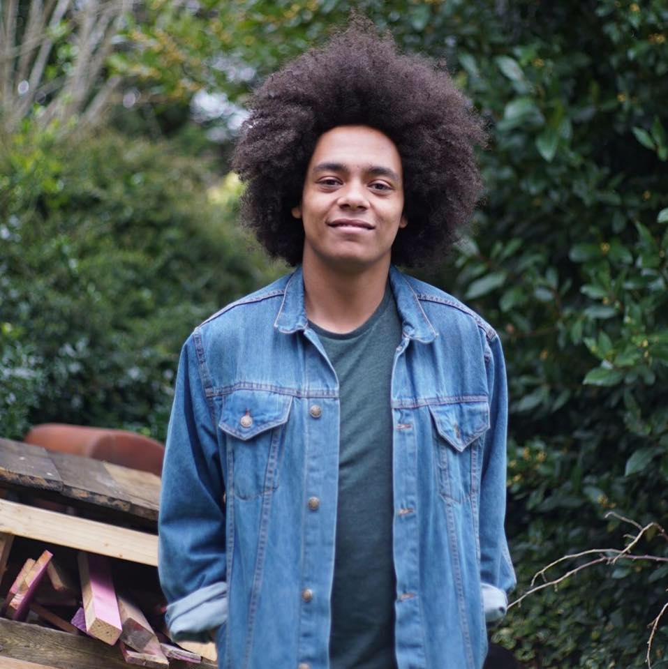
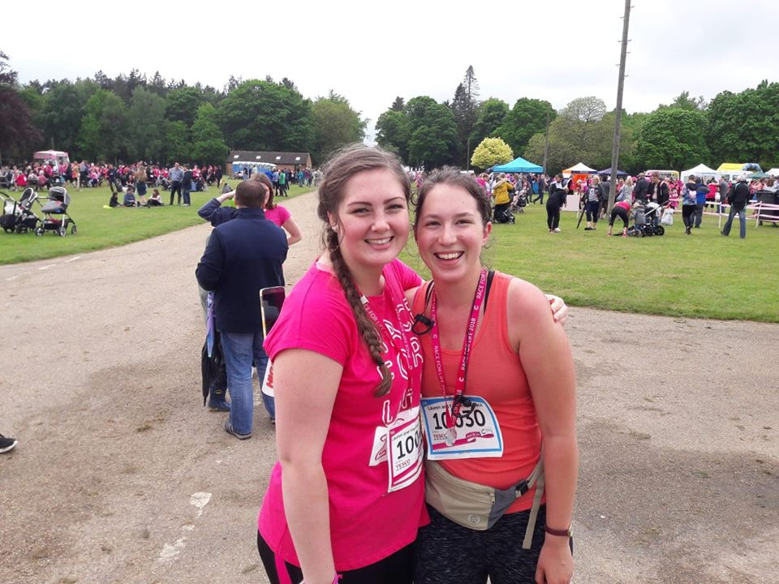
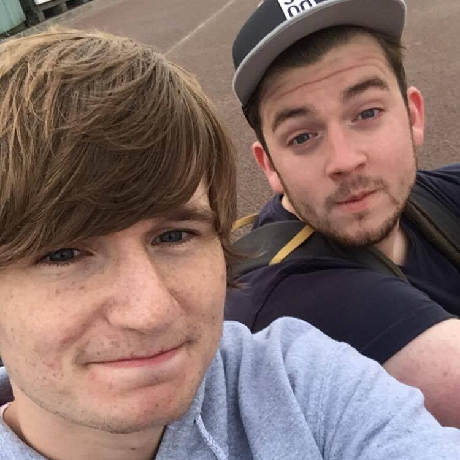

Hayley and Francesca have been best friends since the first day of secondary school. Reunited after being friends at nursery but going to two different primary schools. Since then their friendship has grown and we perceive the other as more like a sister than a friend.
Thomas and Jack are brothers who have remained close their entire life despite taking different paths. Their joint interests in bands, concerts and music in general developed at a young age and still connects them.
Francesca and Elizabeth met in their first year at university (UEA) and became friends almost instantly. Their love of films, comedy and Death in Paradise has been a specific sharing point in their friendship.
Thomas and Ryon are cousins who being close in age grew up more as brothers. As kids they enjoyed film-making and editing their own YouTube series: Alien Adventures.
Francesca and Lauren also met in their first year at university and then became housemates for their remaining three years. During this time, they participated in Norwich's Race for Life together and had numerous cinema trips and film nights.
Thomas and Thomas met at their churches youth group at a young age and have bonded over their love of skateboarding and surfing. Since then, both Tom's, Fracesca and Tayla also went camping together at Big Church Day Out.
